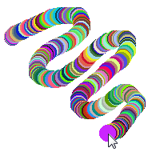

CanvasGadget()
Syntax
Result = CanvasGadget(#Gadget, x, y, Width, Height [, Flags])Description
Create a canvas gadget in the current GadgetList. This gadget provides a drawing surface and events for mouse and keyboard interaction to easily create custom views.
Parameters
#Gadget A number to identify the new gadget. #PB_Any can be used to auto-generate this number. x, y, Width, Height The position and dimensions of the new gadget (in pixels). The maximum width and height is 16000 pixels. Flags (optional) Flags to modify the gadget behavior. It can be a combination of the following constants: #PB_Canvas_Border : Draws a border around the gadget. #PB_Canvas_ClipMouse: Automatically clips the mouse to the gadget area while a mouse button is down (Not supported on OS X). #PB_Canvas_Keyboard : Allows the gadget to receive the keyboard focus and keyboard events. #PB_Canvas_DrawFocus: Draws a focus rectangle on the gadget if it has keyboard focus.The #PB_Canvas_Keyboard flag is required to receive any keyboard events in the gadget. If you include this flag, you should check for the #PB_EventType_Focus and #PB_EventType_LostFocus events and draw a visual indication on the gadget when it has the focus so it is clear to the user which gadget currently has the focus. Alternatively, the #PB_Canvas_DrawFocus flag can be included to let the gadget draw a standard focus rectangle whenever it has the focus.
Return value
Returns nonzero on success and zero on failure. If #PB_Any was used as the #Gadget parameter then the return-value is the auto-generated gadget number on success.
Remarks
The created gadget starts out with just a white background. Use the CanvasOutput() or CanvasVectorOutput() command to draw to the gadget. The drawn content stays persistent until it is erased by a further drawing operation. There is no need to redraw the content every time a #PB_Event_Repaint event is received.
The following events are reported by the gadget. The EventType() function reports the type of the current gadget event:#PB_EventType_MouseEnter : The mouse cursor entered the gadget #PB_EventType_MouseLeave : The mouse cursor left the gadget #PB_EventType_MouseMove : The mouse cursor moved #PB_EventType_MouseWheel : The mouse wheel was moved #PB_EventType_LeftButtonDown : The left mouse button was pressed #PB_EventType_LeftButtonUp : The left mouse button was released #PB_EventType_LeftClick : A click with the left mouse button #PB_EventType_LeftDoubleClick : A double-click with the left mouse button #PB_EventType_RightButtonDown : The right mouse button was pressed #PB_EventType_RightButtonUp : The right mouse button was released #PB_EventType_RightClick : A click with the right mouse button #PB_EventType_RightDoubleClick: A double-click with the right mouse button #PB_EventType_MiddleButtonDown: The middle mouse button was pressed #PB_EventType_MiddleButtonUp : The middle mouse button was released #PB_EventType_Focus : The gadget gained keyboard focus #PB_EventType_LostFocus : The gadget lost keyboard focus #PB_EventType_KeyDown : A key was pressed #PB_EventType_KeyUp : A key was released #PB_EventType_Input : Text input was generatedNote that the events #PB_EventType_KeyDown, #PB_EventType_KeyUp and #PB_EventType_Input are only reported when the gadget has the keyboard focus. This means that the #PB_Canvas_Keyboard flag has to be set on gadget creation to allow keyboard events. On Windows, the #PB_EventType_MouseWheel event is also only reported if the gadget has keyboard focus. On the other OS, this event is reported to the gadget under the cursor, regardless of keyboard focus.
Further information about the current event can be received with the GetGadgetAttribute() function. This information is only available if the current event received by WaitWindowEvent() or WindowEvent() is an event for this gadget. The following attributes can be used:
#PB_Canvas_MouseX, #PB_Canvas_MouseYReturns the given mouse coordinate relative to the drawing area of the gadget. This returns the mouse location at the time that the event was generated, so the result can differ from the coordinates reported by WindowMouseX() and WindowMouseY() which return the current mouse location regardless of the state of the processed events. The coordinates returned using these attributes should be used for this gadget to ensure that the mouse coordinates are in sync with the current event.#PB_Canvas_ButtonsReturns the state of the mouse buttons for the event. The result is a combination (using bitwise or) of the following values:#PB_Canvas_Modifiers#PB_Canvas_LeftButton : The left button is currently down. #PB_Canvas_RightButton : The right button is currently down. #PB_Canvas_MiddleButton: The middle button is currently down.Returns the state of the keyboard modifiers for the event. The result is a combination (using bitwise or) of the following values:#PB_Canvas_WheelDelta#PB_Canvas_Shift : The 'shift' key is currently pressed. #PB_Canvas_Alt : The 'alt' key is currently pressed. #PB_Canvas_Control: The 'control' key is currently pressed. #PB_Canvas_Command: The 'command' (or "apple") key is currently pressed. (Mac OSX only)Returns the movement of the mouse wheel in the current event in multiples of 1 or -1. A positive value indicates that the wheel was moved up (away from the user) and a negative value indicates that the wheel was moved down (towards the user). This attribute is 0 if the current event is not a #PB_EventType_MouseWheel event.#PB_Canvas_KeyReturns the key that was pressed or released in a #PB_EventType_KeyDown or #PB_EventType_KeyUp event. The returned value is one of the #PB_Shortcut_... values used by the AddKeyboardShortcut() function. This attribute returns raw key presses. To get text input for the gadget, it is better to watch for #PB_EventType_Input events and use the #PB_Canvas_Input attribute because it contains the text input from multiple key presses such as shift or dead keys combined.#PB_Canvas_InputReturns the input character that was generated by one or more key presses. This attribute is only present after a #PB_EventType_Input event. The returned character value can be converted into a string using the Chr() function.In addition to this event information, GetGadgetAttribute() can also be used to read the following attributes:
#PB_Canvas_ImageReturns an ImageID value that represents an image with the current content of the CanvasGadget. This value can be used to draw the content of the gadget to another drawing output using the DrawImage() function.#PB_Canvas_Clip
Note: The returned value is only valid until changes are made to the gadget by resizing it or drawing to it, so it should only be used directly in a command like DrawImage() and not stored for future use.Returns non-zero if the mouse is currently clipped to the gadget area or zero if not.#PB_Canvas_CursorReturns the cursor that is currently used in the gadget. See below for a list of possible values. If the gadget is using a custom cursor handle, the return-value is -1.#PB_Canvas_CustomCursorReturns the custom cursor handle that was set using SetGadgetAttribute(). If the gadget uses a standard cursor, the return-value is 0.The SetGadgetAttribute() function can be used to modify the following gadget attributes
#PB_Canvas_ImageApplies the given ImageID to the CanvasGadget. The gadget makes a copy of the input image so it can be freed or reused after this call. Setting this attribute is the same as using StartDrawing(), CanvasOutput() and DrawImage() to draw the image onto the CanvasGadget.#PB_Canvas_ClipIf the value is set to a non-zero value, the mouse cursor will be confined to the area of the canvas gadget. Setting the value to zero removes the clipping.#PB_Canvas_Cursor
Note: Mouse clipping should only be done as a direct result of user interaction with the gadget such as a mouse click and care must be taken to properly remove the clipping again or the user's mouse will be trapped inside the gadget. The #PB_Canvas_ClipMouse gadget flag can be used to automatically clip/unclip the mouse when the user presses or releases a mouse button in the gadget.Changes the cursor that is displayed when the mouse is over the gadget. The following values are possible:#PB_Canvas_CustomCursor#PB_Cursor_Default : default arrow cursor #PB_Cursor_Cross : crosshair cursor #PB_Cursor_IBeam : I-cursor used for text selection #PB_Cursor_Hand : hand cursor #PB_Cursor_Busy : hourglass or watch cursor #PB_Cursor_Denied : slashed circle or X cursor #PB_Cursor_Arrows : arrows in all direction (not available on Mac OSX) #PB_Cursor_LeftRight : left and right arrows #PB_Cursor_UpDown : up and down arrows #PB_Cursor_LeftUpRightDown: diagonal arrows (Windows only) #PB_Cursor_LeftDownRightUp: diagonal arrows (Windows only) #PB_Cursor_Invisible : hides the cursorChanges the cursor that is displayed when the mouse is over the gadget to a custom cursor handle created using the corresponding OS API. This attribute expects the following kind of input:A 'mini help' can be added to this gadget using GadgetToolTip().Windows: a HCURSOR handle
Linux: a GtkCursor pointer
Mac OSX: a pointer to a Cursor structure
Example
If OpenWindow(0, 0, 0, 220, 220, "CanvasGadget", #PB_Window_SystemMenu | #PB_Window_ScreenCentered) CanvasGadget(0, 10, 10, 200, 200) Repeat Event = WaitWindowEvent() If Event = #PB_Event_Gadget And EventGadget() = 0 If EventType() = #PB_EventType_LeftButtonDown Or (EventType() = #PB_EventType_MouseMove And GetGadgetAttribute(0, #PB_Canvas_Buttons) & #PB_Canvas_LeftButton) If StartDrawing(CanvasOutput(0)) x = GetGadgetAttribute(0, #PB_Canvas_MouseX) y = GetGadgetAttribute(0, #PB_Canvas_MouseY) Circle(x, y, 10, RGB(Random(255), Random(255), Random(255))) StopDrawing() EndIf EndIf EndIf Until Event = #PB_Event_CloseWindow EndIf
Example
CanvasGadget.pb
See Also
CanvasOutput(), GetGadgetAttribute(), SetGadgetAttribute(), EventType(), StartDrawing()
Supported OS
All